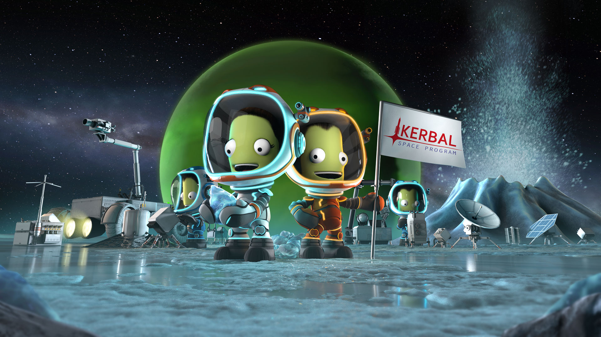

Hey! I am a year 9 student currently at Hurlstone Agricultre high school. The subject i do include things like: HSIE, Maths, English, Comerce, Science, PDHPE, IST and others. I love to code and play games. My favorite game is Kerbal Space Program. It is a simulation game about exploring the solar system and beyond in spacecrafts that you build and control. The purpose of the game is to explore everyplanet and create amazing spaceships that will power the kerbal civillization into the future. As you progress further into the game you will unlock more and more techs. It is a very cool game.
Tennis is another thing I enjoy doing very much. Tennis is a sport where you try to hit the ball back and forth over a net until somone misses the ball or hits it out of the court. Tennis. I enjoy tennis as it is a easy game to play and can be played with up to 4 people. There are also many competions out there and there is always a prize aka a trophy. A trophy always looks good on your shelf and it feels very acomplishing to have many trophies on a wall

The Rubiks cube is a very fun puzzel to solve and play with. It is a cube with many cubes. You have to try to align the pieces so they form a face and you have to do this to all 6 faces of the cube. The goal is to have only one color on each face of the cube. The are many types of rubiks cubes, they range from small ones to big ones like a 2x2 or a 9x9. It takes a long time to learn to solve it the first time but once you have memorised many of the algorithims it becomes very easy to solve. There are many competitions out there to see how fast people can solve to cube and to find the best solvers. You should learn how to solve it.